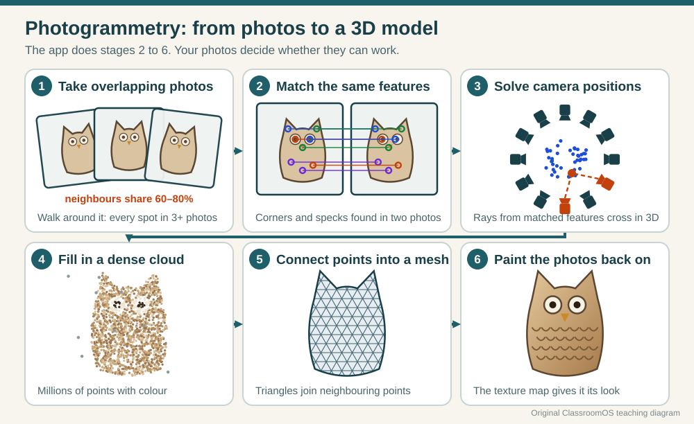
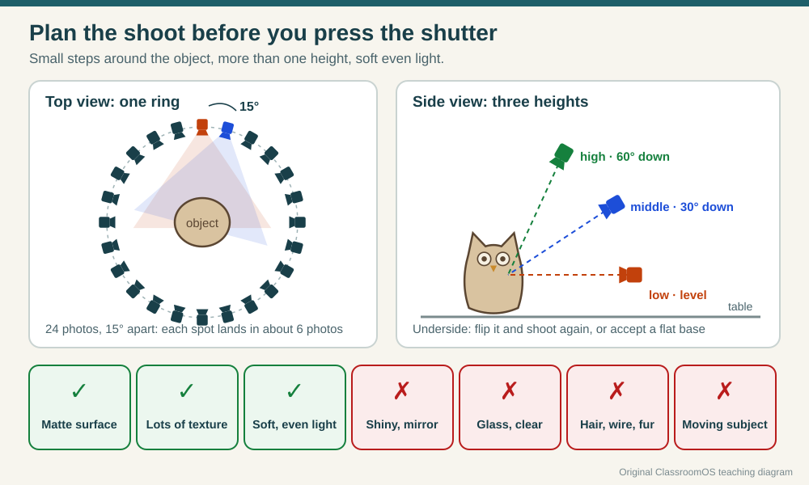
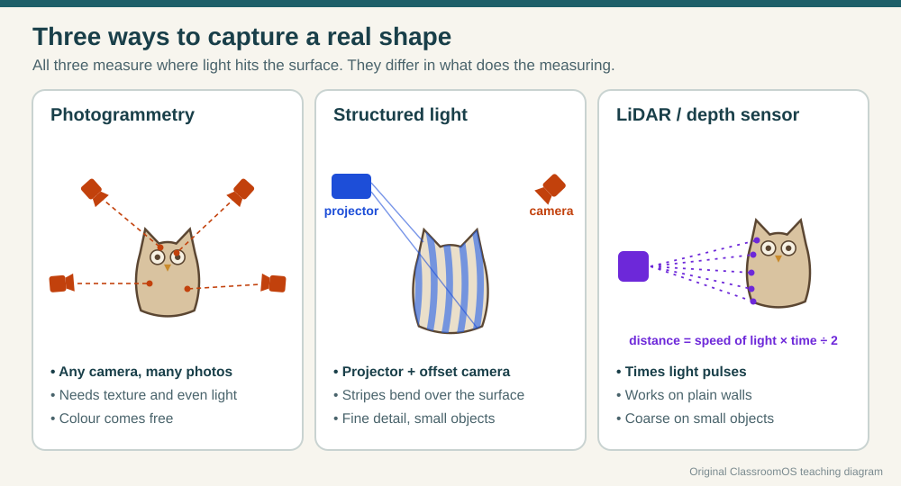
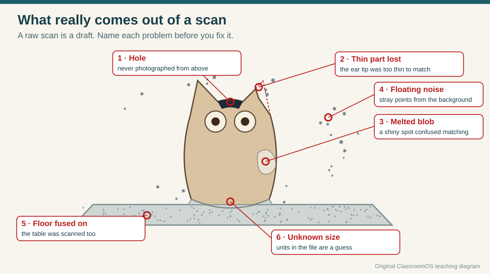
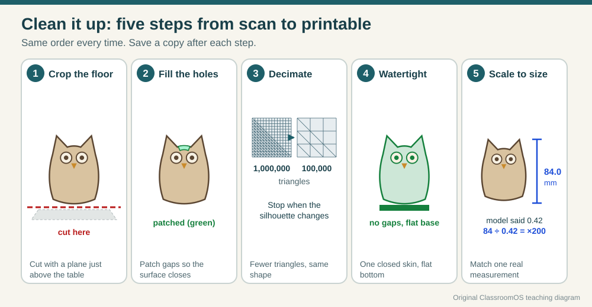

Walk around a small owl figurine taking photos, every step or two. Feed those photos to an app, and a few minutes later you can spin a 3D copy of the owl on your screen, with every chip and scratch in place. Nobody modelled it: the shape came out of the photos. That's photogrammetry, and it's one way to make the third Trio trait, something made in the likeness of something real.
The catch is that the app can only rebuild what your photos prove. Shiny spots, missing angles and a wobbly camera all turn into holes and lumps. In this lesson you'll find out why, plan a shoot that works, clean up what comes out, give it its real size, and print or carve it.
Photos → points → mesh
Every spot in 3+ photos
Measure once, scale once
Grades K–12 · 3–4 class periods

Six stages, one owl. You do stage 1; the app does stages 2 to 6, and it can only work with what stage 1 gave it. Original ClassroomOS teaching diagram.
Why scan for the Trio Challenge?
This quarter every student shows three traits: something that moves while all its printed pieces stay together, something useful, and something made in the likeness of something else (see the Trio Challenge). A scan is a fast, honest start for the likeness trait: the proportions come from the real thing, not your guess.
A scan is not the finished piece, though. You will still choose what to keep, fix what the camera missed, and decide how big to make it. A scanned seashell can become the lid of a hinged box; a scanned toy dinosaur can become the handle of a useful tool. That's where your design comes in.
The idea: two views pin down a point
Close one eye and hold a finger up. Swap eyes and the finger jumps sideways against the background. That jump is parallax, and your brain uses it to judge distance. Photogrammetry does the same thing with photos taken from different places.
Find features.The app looks for feature points in every photo: corners, specks, the edge of a painted eye, anything small and distinctive.
Match them.It finds the same feature in other photos. A plain white wall has nothing to match; a speckled stone has thousands.
Work out where each photo was taken.From hundreds of matches the app solves where each camera stood and which way it pointed. Researchers call this structure from motion.
Triangulate.A feature in one photo only tells you a direction: a ray from the camera through that spot. Two rays from two cameras cross at one place. That crossing is a 3D point. This is triangulation.
Fill in, connect, paint.Millions of points make a point cloud. The app joins neighbouring points into triangles (a mesh), then projects the photos back onto it as a texture map.
Rule that follows from this: a spot that appears in only one photo can't be placed in 3D, so it becomes a hole. Every spot needs at least two photos, and good guides ask for three or more. The Agisoft Metashape manual, for example, asks for 60–70% overlap between photos of an object so that "each point should be visible on at least three photos".
Triangulation lab: where do the rays cross?
This is a top view of a table. The tan shape is a figurine, the yellow dot is one feature on its surface, and the numbered blocks are camera positions. Each camera that sees the feature casts a ray through it. Every ray has a tiny error (the app can be off by a pixel or so), so the rays cross in a small orange region, not a perfect point. The smaller the region, the more precisely that point is known.
Drag the cameras · drag the dot around the figurine
Cameras
–
Angle between rays
–
Baseline
–
Depth uncertainty
–
Outline covered
–
Loading the lab…
outline seen by 2+ matching cameras: reconstructed
seen, but not matched: a hole
never seen: a hole
Try these, in order
Too close together.The rays are nearly parallel, so the orange region stretches into a long sliver: the app knows the direction but not the distance. The distance between the cameras is the baseline, and a tiny baseline means a poor depth estimate.
16° apart.The cameras stand 16° apart around the figurine (seen from the feature on its front, their rays meet at about 19°). The rays cross at a healthy angle and the region shrinks to a small blob. Read the depth uncertainty, then look at the outline: one point is pinned down, but two cameras still leave most of the figurine unseen.
70° apart.Now the baseline is huge, but the feature looks too different from the two places to be recognised as the same spot, so nothing matches. (This lab treats views more than 40° apart as unmatchable. Real apps vary, but all of them struggle with big jumps.) That is why you take many small steps rather than a few big ones.
Three cameras.A third ray cuts the region down further and covers more of the outline. Count how much of the outline turns green.
Same angle, farther away.Each pixel now covers more of the object, so the region grows. Precision gets worse quickly with distance: in the standard stereo formula, depth error grows with the square of the distance.
Feature on the side.Both cameras see the side at a grazing angle or not at all. To capture the sides and back, the cameras have to go there.
For grades 9–12: the formula. For two cameras side by side, depth is Z = f·B ÷ d (focal length in pixels × baseline ÷ disparity in pixels). A matching error of δd pixels gives a depth error of about δZ ≈ Z² · δd ÷ (f · B). Doubling the distance makes the error four times bigger; doubling the baseline halves it. The lab uses a 4000-pixel-wide photo with a 65° field of view, so 1 pixel is about 0.016°. The orange region is drawn 60× larger than life so you can see it; the numbers in the readout are the real size.
Plan the shoot
The lab gives you the rules. Small steps keep neighbouring photos overlapping, so features match. Several heights cover the top. Soft, even light keeps the surface looking the same from every side, so the app recognises it.

A photo every 15° gives 24 per ring, and each spot lands in several photos. Add a ring from above so the top isn't a hole. Glass, mirrors, fur and anything that moves are the hard cases for every photo-based scanner. Original ClassroomOS teaching diagram.
Choose the object
Matte, textured, solid
Stone, wood, unglazed clay, a sneaker, a painted figurine. Avoid glass, chrome, glossy plastic, hair and thin wires.
Light it
Soft and even
An overcast day, a shaded window, or lights bounced off a white wall. No flash: it moves with the camera, so the shading changes in every shot.
Shoot it
Small steps, several heights
Fill most of the frame, keep it sharp, move 10–15° between photos, and do two or three rings at different heights. Keep the object still.
Size it
Bring a reference
Photos can't tell a toy from a statue. Put a ruler in the shots, or measure one length with calipers to scale the model later.
Shooting-plan checker
Fill in your plan before you shoot. The checker estimates overlap, how much of the frame your object fills, and flags the usual problems. Its overlap figure assumes a patch of surface can be matched while you see it within about 45° of face-on, so each patch stays in view for about 90° of travel around the object.
The starting plan has several problems on purpose. Fix them one at a time until the checker says Ready to shoot, and copy the final plan onto your record sheet.
Other ways to scan
Photogrammetry needs only a camera. Two other families of scanners shine their own light instead of relying on the room's.

All three measure where light lands on the surface. Structured light still uses triangulation, with the projector standing in for the second camera. LiDAR times light instead. Original ClassroomOS teaching diagram.
Method
How it measures
Good at
Struggles with
Photogrammetry
Matches features across many photos and triangulates them
Colour texture, objects from coins to buildings, costs nothing but time
Plain, shiny or clear surfaces; anything that moves
Structured light
Projects a known pattern of stripes or dots; a camera set to one side sees how the pattern bends over the surface
Fine detail on small objects, fast capture
Bright sunlight washes out the pattern; still dislikes shiny and clear surfaces
LiDAR and depth sensors
Sends out pulses of light and times how long they take to come back
Rooms and large objects, plain walls, quick capture
Small details: a phone sensor's depth points are spaced too far apart for a figurine's features
Some phones and tablets now carry a small LiDAR sensor (Apple added one to the iPad Pro and the iPhone 12 Pro in 2020), and many scanning apps combine its depth readings with photogrammetry. Free scanning apps appear, change their names and change their free tiers often, so this lesson teaches the workflow rather than one app. Whatever your class uses, you will still choose the object, plan the light and angles, and clean the result.
What really comes out
Open a raw scan and you'll rarely find a clean statue. Expect a draft with problems you can name and fix. Each problem traces back to something in the photos.

Every problem has a cause: the top was never photographed from above, the ear was too thin, the background leaked in, a shiny spot confused matching, and nothing in the photos said how big the owl is. Original ClassroomOS teaching diagram.
You see
Because
Next time
This time
Holes
Parts seen in fewer than two matching photos
More heights; small steps
Fill holes in cleanup
Floor or stand fused to the base
The table was in the photos too
Plain base, or a cut line you can find
Crop with a plane
Floating specks
Background points and mismatches
Fill the frame with the object
Delete loose pieces
Melted lumps
Glare and plain areas that matched wrongly
Soft light; matte objects
Smooth, or rebuild in CAD
Lost thin parts
Too few pixels across them
Get closer; pick thicker subjects
Rebuild them in CAD
Unknown size
Photos have no built-in scale
Ruler in the shots
Scale to a caliper measurement
Clean it, then scale it
Do the same five steps in the same order every time, and save a new copy after each one, so a bad step costs you one step, not the whole scan. Any mesh editor can do them: the free, open-source MeshLab and Blender both can, and many scanning apps have crop and fill tools built in. The steps below name what to do, not which button to press.

Crop, fill, decimate, close, scale. The last step is arithmetic: real size ÷ model size = scale factor. Here 84 mm ÷ 0.42 units = ×200. Original ClassroomOS teaching diagram.
Crop the floor and the junk.Cut the mesh with a flat plane just above the table, then delete every loose piece that isn't connected to the main body.
Fill the holes.Patch each gap. Small holes fill neatly; a big one (the whole top of a head) may need modelling by hand.
Decimate.A raw scan can have millions of triangles, far more than a printer can show. Reduce the count in steps (half, then half again) and stop as soon as the silhouette starts to change.
Make it watertight with a flat base.A printer needs one closed skin with an inside and an outside: a manifold mesh. Close the base flat so it sits on the bed.
Scale to a real measurement.Measure one clear length on the real object with calipers, measure the same length on the model, and multiply the model by real ÷ model. That number is the scale factor.
Scale calculator
Measure the longest straight length you can find on the object: an error of 0.1 mm matters less on 80 mm than on 8 mm. Then check a second length. If the second one is off by more than a couple of percent, something is warped; measure again before you print.
Units trip people up here. The same file can open at different sizes in different apps, because each app guesses what "1" means:
A camera can copy almost anything it can see. That doesn't mean you may copy it, keep it or share it.
People
Ask first, every time
A scan of a face or a body is personal. Only scan a person who has clearly agreed, with your teacher's OK, and tell them where the scan will go. If they later ask you to delete it, delete it. Never scan someone secretly.
Things that belong to someone
Owners decide
A friend's sculpture, a shop's product, a museum piece: ask before you scan, and ask again before you share. Some museums don't allow photography of certain objects at all.
Cultural and sacred objects
Some objects aren't for copying
Some objects are sacred to a living community, or belong to a people whose history was taken from them. Their community may ask that they not be photographed, copied or printed. Respect that, even when a scan is available.
Open collections
Read the licence
Every downloaded scan carries a licence. CC0 (public domain) means use it any way you like; CC BY means credit the source; NC means non-commercial only. Write the licence on your record sheet.
Museums now share thousands of scans on purpose, so you can study objects you could never touch:
Smithsonian 3D (3d.si.edu), part of Smithsonian Open Access: thousands of models made by the Smithsonian's Digitization Program Office, from the Apollo 11 command module to a woolly mammoth. Models marked CC0 can be downloaded, changed and printed freely.
Scan the World (myminifactory.com/scantheworld): a community project begun in 2014 that shares scans of sculptures and artefacts, many from partner museums, for 3D printing. Licences vary by object, so check each one.
Your scan: capture, clean, measure, make
Work in pairs: one person moves the camera, the other keeps the object still and the lighting even, then swap.
Choose and check.Pick a matte, palm-sized classroom object (a carved animal, a shoe, a fossil cast, a clay pot). Run your plan through the checker until it says Ready to shoot.
Measure the real thing first.With calipers, measure two lengths you can find again on the model: height and width, say. Write them down to 0.1 mm.
Shoot.Follow your plan: rings, steps, light. Count your photos. Check a few for blur before you put the object away.
Process.Run the photos through your class's scanning app. Save the raw result before changing anything.
Name the problems.Mark the raw scan's holes, floor, noise, lumps and lost parts on your sheet.
Clean and scale.Do the five cleanup steps. Scale with your first measurement, then check the second.
Make it.Either print it (orient it, check overhangs; see Plan a printable orientation), or carve it: export an STL, open the Marble Studio, choose Use my 3D model (STL) as the maquette, run the autopilot and read its likeness score. No printer? Beyond the printer shows cardboard-slice and cast versions.
Compare.Measure the print (or read the studio's size) against the real object. Hold them side by side and run the three-second silhouette test from In the Likeness.
No object, or the scan failed? Use a provided open-licensed scan instead: your teacher downloads a CC0 model from Smithsonian 3D or a suitably licensed one from Scan the World. Do steps 5–8 with it: you'll still crop, check it is watertight, scale it to a size you choose, and record the licence and credit.
Record sheet
Object, and whose it is
Permission from / licence of a downloaded scan
Plan: photos per ring × rings, light, method
Photos taken / app used
Problems in the raw scan
Cleanup steps done (and triangle count before → after)
Real length 1 (mm) / model length 1 / scale factor
Real length 2 (mm) / scaled model length 2 / % difference
Made as: print / Marble Studio carve / other. Final size
Likeness test: what a classmate named it, and how fast
Next time I would change…
Choose your level
Grades K–2
Good scan, bad scan
Sort a tray of objects into "camera can copy it" and "camera gets confused": a rock, a spoon, a glass, a teddy bear.
Walk around a toy in a circle with the teacher's tablet, one small step per photo.
Look at a museum scan on screen and name what it is a likeness of.
Grades 3–5
Plan and shoot
Use the lab's buttons and say in one sentence why "too close together" fails.
Fill in the checker until it's ready, then shoot with a partner.
Measure the object with a ruler and compare it with the model's size.
Grades 6–8
The whole pipeline
Shoot, process, name the problems, do all five cleanup steps.
Scale with calipers and check a second length to within 2%.
Print it or carve it in the Marble Studio for the Trio likeness trait.
Grades 9–12
Measure the accuracy
Use δZ ≈ Z²·δd ÷ (f·B) to predict how error changes with distance; test it by scanning one object from two distances.
Report the % error of three caliper lengths.
Remix the scan into a design that also moves or does a job.
Checkpoint
Before you call your scan finished, you should be able to say yes to each of these:
I can explain why a spot seen in only one photo becomes a hole.
I can explain why cameras too close together, and too far apart, both fail.
My plan passed the checker, and I can say what each fix was for.
I named the problems in my raw scan before fixing them.
My model is watertight, has a flat base, and matches two caliper measurements.
I have permission for my object (or a licence for a downloaded scan) written on my sheet.
Exit prompt: “My scan is a likeness of ___. The hardest part to capture was ___ because ___. Next time I would ___.”
Practice problems
Easy1. You take a photo every 15° in a full circle around an object. How many photos is that?
Hint: a full circle is 360°. 360 ÷ 15.
Easy2. Which object will be hardest to capture with photogrammetry?
Hint: what does the camera see when it looks at glass?
Easy3. A feature appears in only one photo. What can't the app work out?
Hint: in the lab, one camera gives a long red sliver.
Medium4. Calipers say the real owl is 84 mm tall. The raw model says 0.42 units. What scale factor makes it real size?
Hint: real ÷ model = 84 ÷ 0.42.
Medium5. A model already in millimetres is 42 mm wide, but the real object is 63 mm wide. What percentage do you type into the slicer's scale box?
Hint: 63 ÷ 42 = 1.5. Write it as a percentage.
Medium6. You decimate a 1,200,000-triangle scan to 10% of its triangles. How many are left?
Hint: 10% of 1,200,000.
Medium7. Why does a turntable scan go wrong in front of a busy, patterned wall?
Hint: on a turntable the camera stays still. Which features move between photos, and which don't?
Challenge8. Keep the baseline and the matching error the same, but stand twice as far away. About how many times bigger does the depth error get?
Hint: δZ ≈ Z²·δd ÷ (f·B). What happens to Z² when Z doubles?
Challenge9. Your height measurement scales the model correctly. The width should be 52.0 mm, but the scaled model measures 53.3 mm. What is the percentage error, to one decimal place?
Hint: (53.3 − 52.0) ÷ 52.0 × 100.
Medium10. You want to scan a classmate's head for a game character. What comes first?
Hint: a scan of a face is personal. Permission comes before the camera.
Vocabulary
Photogrammetry
Measuring shapes from photographs; here, building a 3D model from many overlapping photos.
Feature point
A small, distinctive spot (a corner, a speck) that an app can find again in another photo.
Triangulation
Finding a point's position where rays from two or more viewpoints cross.
Baseline
The distance between two camera positions. Too short gives poor depth; too long and features stop matching.
Point cloud
A set of 3D points, often coloured, measured from a surface.
Texture map
An image wrapped onto a mesh to give it colour and surface detail.
Structured light
Scanning by projecting a known pattern and watching how it bends over a surface.
LiDAR
A sensor that measures distance by timing reflected pulses of light.
Decimation
Reducing a mesh's triangle count while keeping its shape.
Watertight
A mesh with no holes: one closed skin with a clear inside and outside, ready to print.
Calipers
A measuring tool with jaws that reads lengths to a tenth of a millimetre or better.
Scale factor
The number you multiply a model by to make it the right size: real length ÷ model length.
CC0
A licence that places a work in the public domain: anyone may use it for anything.
Agisoft. Metashape User Manual, Standard Edition, Version 2.3, “Capturing scenarios”: at least 60–70% overlap so each point is on at least three photos; avoid untextured, shiny, highly reflective or transparent objects; place a ruler or markers of known distance for measurement. agisoft.com
Schönberger, J. L. and Frahm, J.-M. (2016). “Structure-from-Motion Revisited.” IEEE Conference on Computer Vision and Pattern Recognition (CVPR). The paper behind the open-source COLMAP software. colmap.github.io
Lowe, D. G. (2004). “Distinctive Image Features from Scale-Invariant Keypoints.” International Journal of Computer Vision 60(2), 91–110. The SIFT feature detector, a classic way to find and match feature points.
Hartley, R. and Zisserman, A. (2004). Multiple View Geometry in Computer Vision, 2nd ed. Cambridge University Press. Triangulation and stereo depth.
AliceVision. Meshroom, free and open-source photogrammetry software. alicevision.org
Apple Newsroom (13 October 2020). “Apple introduces iPhone 12 Pro and iPhone 12 Pro Max with 5G.” (LiDAR scanner.) apple.com
Smithsonian Institution. Smithsonian Open Access (launched February 2020) and Smithsonian 3D, Digitization Program Office. si.edu/openaccess · 3d.si.edu
MyMiniFactory. Scan the World, community archive of scanned cultural artefacts, begun 2014. myminifactory.com/scantheworld